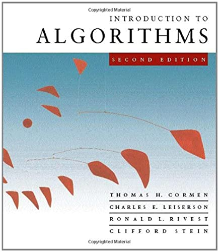

O que você encontrará neste ebook:

- Conceitos fundamentais de algoritmos
- Estruturas de dados eficientes
- Análise de complexidade
- Algoritmos de ordenação e busca
- Algoritmos em grafos
Para j de 2 até n
chave ← A[j]
i ← j - 1
enquanto i > 0 e A[i] > chave
A[i+1] ← A[i]
i ← i - 1
A[i+1] ← chave
Este livro é ideal para estudantes, pesquisadores e desenvolvedores que desejam aprofundar seus conhecimentos em algoritmos e estruturas de dados.